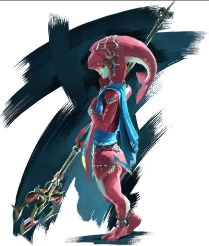
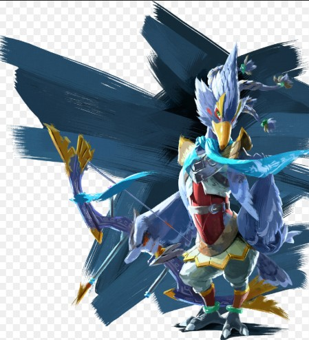
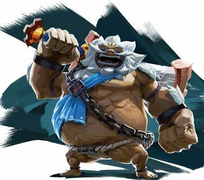
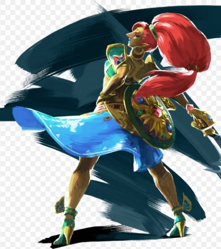

Bienvenue sur le site de Zelda: Breath of the Wild
Zelda: Breath of the Wild est un jeu vidéo d'action-aventure développé et publié par Nintendo pour la console Nintendo Switch. Il s'agit d'un jeu révolutionnaire dans la série The Legend of Zelda.
Caractéristiques du jeu
- Exploration d'un vaste monde ouvert
- Graphismes époustouflants
- Quêtes et énigmes captivantes
- Combats dynamiques
Personnages principaux
- Link
- Zelda
- Ganondorf
- Revali (peuple Piaf)
- Daruk (peuple Goron)
- Mipha (peuple Zora)
- Urbosa (peuple Gerudo)
Les Prodiges :
Les Prodiges sont des personnages importants dans le jeu. Ils sont les descendants des peuples de Hyrule et ont pour mission de piloter les créatures divines pour vaincre Ganon.




Peuples d'Hyrule
Peuple Piaf
Le peuple piaf est un peuple d'oiseau bipède situé au Nord-Ouest du Royaume d'Hyrule, dans la région de Tabanta.
Peuple Zora
Le peuple zora est un peuple d'homme-poisson situé au Nord-Est du Royaume d'Hyrule, dans la région de Lanelle.
Peuple Gerudo
Le peuple gerudo est un peuple de femmes guerrières situé au Sud-Est du Royaume d'Hyrule, dans le Désert Gerudo.
Peuple Goron
Le peuple goron est un peuple de créatures rocheuses situé au Nord-Ouest du Royaume d'Hyrule, dans la région de la Montagne de la Mort.